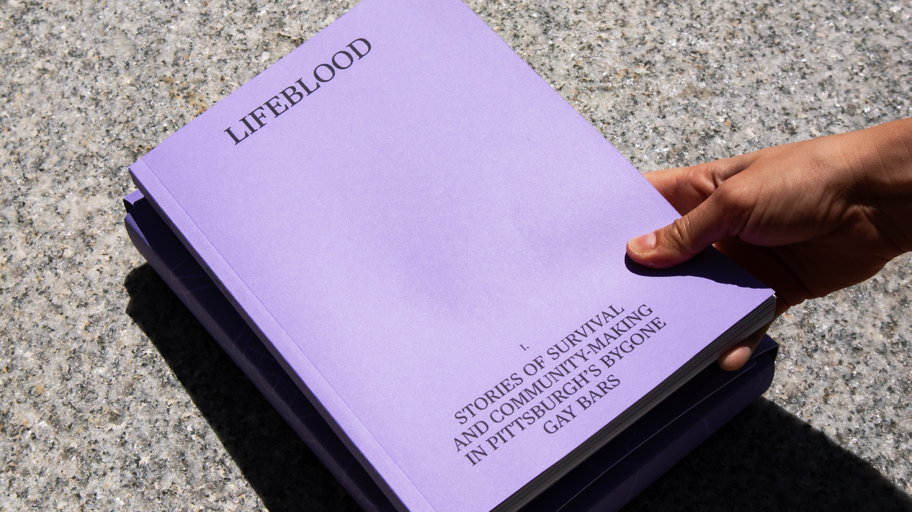
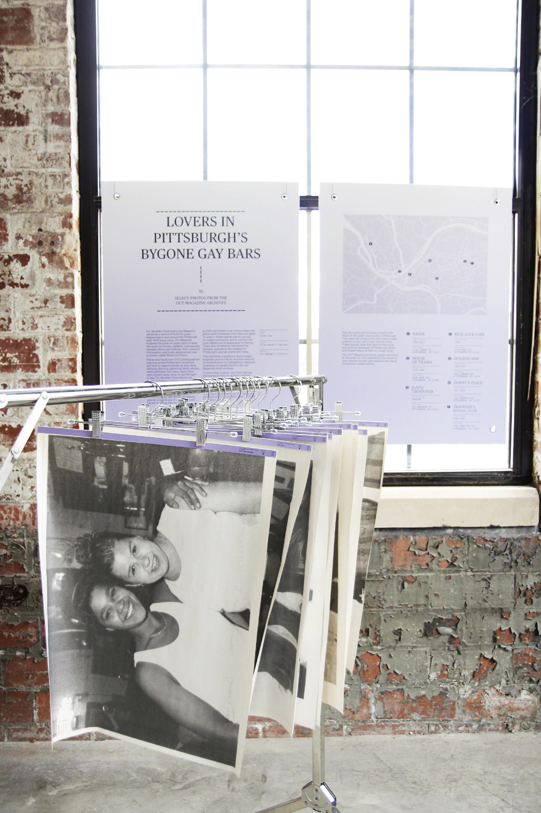
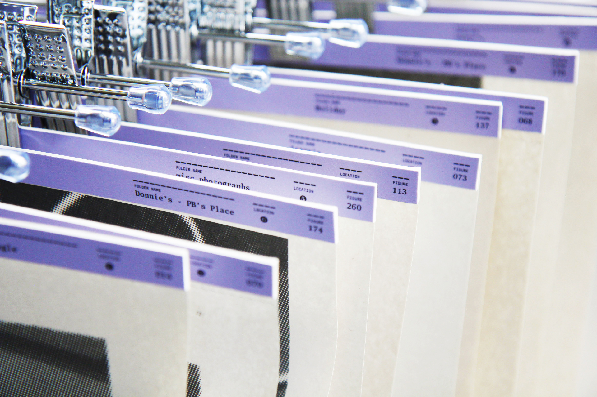
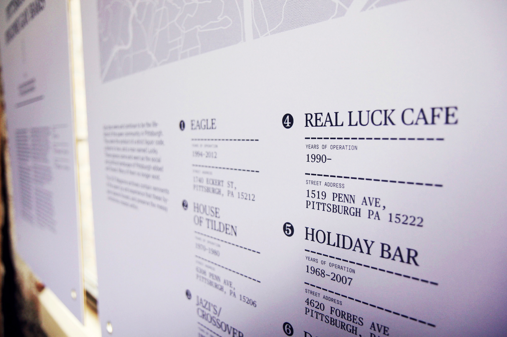
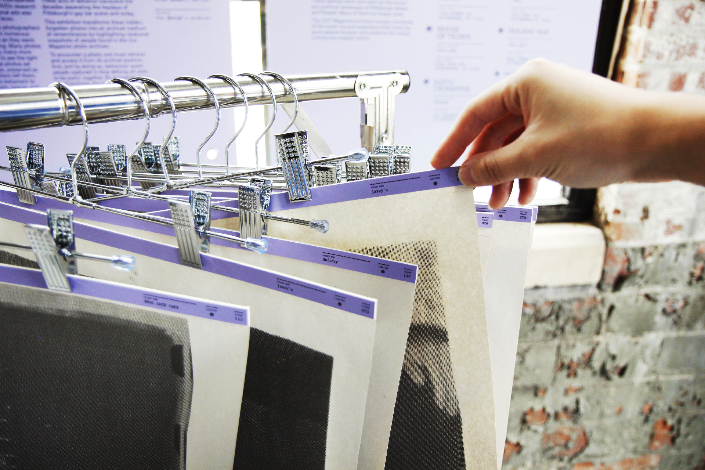

Top
-
Lifeblood
Undergraduate ThesisLifeblood is a three-part series in celebration and remembrance of the OUT Magazine photo archives that documented a bygone era of gay bars in Pittsburgh. The separate artifacts of the series challenge how we might access and document queer archives, bringing order and clarity to mess without oversimplifying and institutionalizing historically scattered histories.
The overarching visual throughlines in this project include newspaper-inspired typography in celebration of the original form these artifacts hail from. A strong indexing system unifies artifacts across medium. Purple and silver paper embrace the -
Time
Role -
14 weeks
Sole designer
Special thanks to Silas Maxwell Switzer, whose archival practice made this project possible. - 
-

-
Printed with Mixam in an edition of 7.
- 
- 
- 
- 
I. Stories of Survival and Community-Making in Pittsburgh's Bygone Gay Bars
Lifeblood Part I. is an introduction to the messy histories of Pittsburgh's gay bar scene. Artifacts, news articles, and current-day photographs are presented beside the Out Magazine photo archives to paint a picture of a vibrant and intensely temporary bar scene that has changed greatly in the past few decades. Notable locations and people are documented into appendices that fill in some blanks as one explores the archives, but leaves many unexplored.
II. Photos from Pittsburgh's Bygone Gay Bars
A recreation of the photo archives as an archivist might encounter them. 165 photos are reprinted front-and-back to real scale, then sorted into folders that mirror the folders in real life.
III. Exhibition
An exhibition concept that brings the photo archive to a wider audience in space. The photos are printed onto large sheets of newsprint, like they were historically intended to be, and sorted by folder into wardrobe-style racks. Participants are encouraged to retrieve each photo from their archival position and engage with both the photo and the photographer's notes, before returning it to its place. By doing so, the viewer participates in a sacred, queer act of historical and ancestral engagement.